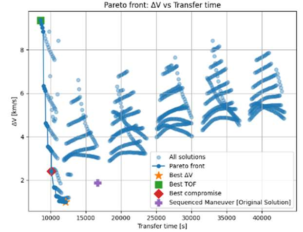
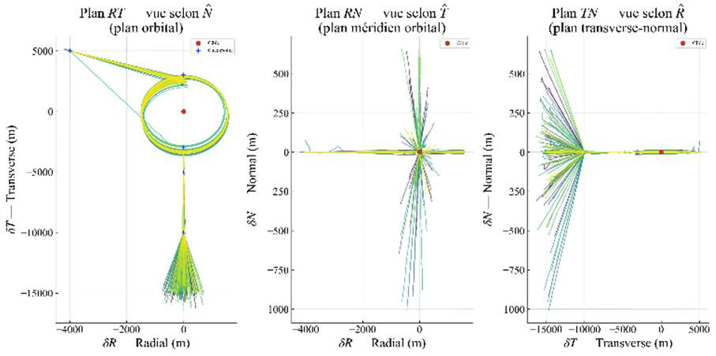
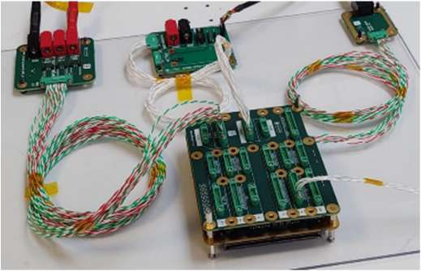

Agena Space develops propulsion modules and a mission simulator used to design and validate the onboard algorithms for satellite rendezvous in low Earth orbit — a chaser spacecraft approaching and inspecting a target. My internship focused on two software components of that simulator: the mission-analysis module and the guidance, navigation, and control (GNC) module, which needed to be validated, optimized, and prepared for execution on the onboard flight computer.
Six-month engineering internship (PFE), owning both software bricks end to end: algorithm development, validation, debugging, and the eventual embedded port — working with an academic tutor at Arts et Métiers and a mission-analysis/GNC tutor at Agena Space.
I developed a deterministic method for computing transfer trajectories: solving Lambert's problem inside an iteratively refined grid search. It generates a Pareto front trading total transfer time against total ΔV, performing all required orbital corrections — altitude, eccentricity, and inclination — simultaneously across two impulsive maneuvers. The resulting Pareto front Pareto-dominated the pre-existing sequential-maneuver solution. I also evaluated the NSGA-II genetic algorithm as an alternative and rejected it: it's non-deterministic and fragile near the problem's continuity constraints, which made the grid-search method a better fit for a tool that has to give repeatable answers.

To characterize robustness, I propagated orbital dynamics with RK4 integration (~10⁻³ m precision), modeling J2, solar radiation pressure, and atmospheric drag perturbations, and implemented a Kalman filter estimating the spacecraft's inertial position and attitude state. I then ran a 50-run Monte Carlo campaign on an inspection rendezvous sequence across two thrust modes. The impulsive-thrust mode proved robust — zero failures, a mean ΔV of 41.90 m/s, and sub-meter final dispersion. The continuous-thrust mode showed drift in roughly 10% of runs with no repeatability. I traced the common root cause to insufficiently precise attitude control at the moment of correction, which led to fixing five software defects. Even after those fixes, some failures remained: the attitude PID, tuned for steady-state operation, still produces a lag error when subjected to a ramp command — a limitation I flagged for future work rather than papering over.

With the algorithms validated, I ported the GNC code from Python to C, cutting per-cycle runtime by a factor of 8.2 — from 1.044 ms down to 127.1 µs — while preserving bit-for-bit identical outputs. I then integrated the ported code onto a hardware-in-the-loop Flatsat testbed, first bringing it up on a Raspberry Pi 4 before moving it to the actual onboard flight computer, the OBS-VSP-v1.0.

Python, C, RK4 numerical integration, Kalman filtering, Monte Carlo simulation, Git, Raspberry Pi 4 / Flatsat hardware-in-the-loop bench, OBS-VSP-v1.0 flight computer.
Open items identified during the internship: enriching the multi-impulse trajectory planning, improving attitude-control robustness under ramp commands, a deeper statistical characterization of the Monte Carlo campaigns, and eventually replacing the remaining Python layer with fully precompiled algorithms.